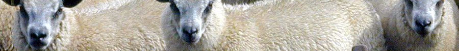
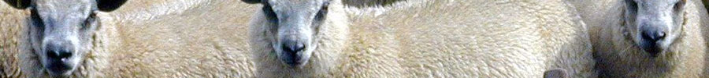

| News | Events | Resources | About | Contact |

|
||||||
| ...promoting investment in environmentally, socially and culturally sustainable food systems | ||||||
| ||||||
 | ||||||
|
SMA Links
What is a A locavore is someone who eats food grown or produced locally. They buy from farmers' markets, CSA groups or grow food in their own gardens. Fresh, local products are more nutritious and taste better. Local foods are a more environmentally friendly means of obtaining food, since supermarkets that import their food use more fossil fuels and non-renewable resources. Organic and sustainable food practices also serve to renew the land, restoring fragile eco-systems to a more healthy and balanced existence. |
Lastest Announcements 2/8/2010 MEDIA ALERT -- Save the Dates! Slow Money Austin is happy to announce its 2010 Slow Money Austin Showcase and companion fundraising dinner, set for April 21 and April 22, respectively: Slow Money Austin 2010 Showcase April 21, 12:30 - 5:00 p.m. Council Chambers, Austin City Hall, 301 W. 2nd Street, Austin, TX Slow Money Austin Fundraising Dinner April 22, 6:00 p.m. Barr Mansion, 10463 Sprinkle Road, Austin, TX Visit our Events section for details. Click here to register. Key Articles Community Food Enterprise: Local Success in a Global Marketplace by Michael H. Shuman, 1/31/2010 The Facts About Food and Farming by Russ Parsons, Los Angeles Times, 1/6/2010 Announcements Sign-up to receive Slow Money Austin news releases and announcements. |
Our Partners Skematik |
| Copyright © 2010 Slow Money Austin - All Rights Reserved |